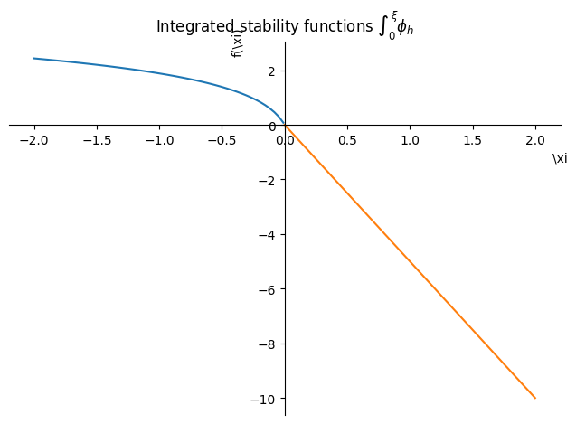

Stratification corrections and Newton Raphson method to calculate Monin Obukhov length $z/L$
from sympy import symbols, init_printing
import sympy as sp
# Required only in terminal
# init_printing()
from sympy.printing.pycode import pycode
from IPython.display import Code, display
def show_python(expr):
code = pycode(expr).replace("math", "np").replace(r"\xi_", "xi")
return display(Code(code, language="python"))
z1, z0, z = symbols("z_1 z_0 z", real=True, positive=True)
L, xi = symbols(r"L \xi", real=True)
z.is_positive
True
L.is_positive
Let’s create dummy variables depending on Monin Obukhov length $L$ (because Sympy cannot refine piecewise functions)
Lp = symbols("L", positive=True)
Ln = symbols("L", negative=True)
Lp.is_positive
True
Ln.is_positive
False

Symbols
$\xi = z/L$
$L = $ Obukhov length
$Ri = $ Richardson number
Momentum
Computing $\phi_m(\xi)$
phi_m = sp.Piecewise(
(1 + 5 * xi, xi >= 0), (1 / sp.root((1 - 16 * xi), 4), xi < 0)
)
phi_m
\[\begin{split}\displaystyle \begin{cases} 5 \xi + 1 & \text{for}\: \xi \geq 0 \\\frac{1}{\sqrt[4]{1 - 16 \xi}} & \text{otherwise} \end{cases}\end{split}\]
# import numpy as np
# np.seterr('raise')
# np.seterr('warn')
sp.plot(phi_m, (xi, -3, 1.5), axis_center=(0, 0))
<string>:1: RuntimeWarning: invalid value encountered in double_scalars
<sympy.plotting.plot.Plot at 0x7f7c0ddd7ee0>
show_python(phi_m)
((5*\xi + 1) if (\xi >= 0) else ((1 - 16*\xi)**(-1/4)))
import matplotlib.pyplot as plt
import numpy as np
xs = np.linspace(-3, 2)
@np.vectorize
def phi_m_numpy(xi):
return eval(pycode(phi_m).replace(r"\xi", "xi"), locals())
plt.plot(xs, phi_m_numpy(xs))
[<matplotlib.lines.Line2D at 0x7f7c0da67460>]
psi_m_int = (1 - phi_m) / xi
psi_m = sp.integrate(psi_m_int, (xi, 0, z / L))
psi_m
\[\begin{split}\displaystyle \begin{cases} 2 \log{\left(\sqrt[4]{1 - 16 \min\left(0, \frac{z}{L}\right)} + 1 \right)} + \log{\left(\sqrt{1 - 16 \min\left(0, \frac{z}{L}\right)} + 1 \right)} - 2 \operatorname{atan}{\left(\sqrt[4]{1 - 16 \min\left(0, \frac{z}{L}\right)} \right)} - 3 \log{\left(2 \right)} + \frac{\pi}{2} & \text{for}\: \frac{z}{L} < 0 \\5 \min\left(0, \frac{z}{L}\right) - \frac{5 z}{L} & \text{otherwise} \end{cases}\end{split}\]
psi_m.refine(sp.Q.zero(z)).subs(z, 0)
\[\displaystyle 0\]
psi_m_stable = psi_m.refine(sp.Q.positive(L)).subs(L, Lp)
psi_m_stable
\[\displaystyle - \frac{5 z}{L}\]
psi_m_unstable = psi_m.refine(sp.Q.negative(L)).subs(L, Ln)
psi_m_unstable
\[\displaystyle 2 \log{\left(\sqrt[4]{1 - \frac{16 z}{L}} + 1 \right)} + \log{\left(\sqrt{1 - \frac{16 z}{L}} + 1 \right)} - 2 \operatorname{atan}{\left(\sqrt[4]{1 - \frac{16 z}{L}} \right)} - 3 \log{\left(2 \right)} + \frac{\pi}{2}\]
Substitute $\sqrt[4]{1 - 16 z/L} \to \xi_4$
xi4 = symbols(r"\xi_4", positive=True)
(psi_m_unstable_param := psi_m_unstable.subs(sp.root(1 - 16 * z / Ln, 4), xi4))
\[\displaystyle 2 \log{\left(\xi_{4} + 1 \right)} + \log{\left(\xi_{4}^{2} + 1 \right)} - 2 \operatorname{atan}{\left(\xi_{4} \right)} - 3 \log{\left(2 \right)} + \frac{\pi}{2}\]
show_python(sp.logcombine(psi_m_unstable_param))
np.log((1/8)*(xi4 + 1)**2*(xi4**2 + 1)) - 2*np.atan(xi4) + (1/2)*np.pi
p1 = sp.plot(
psi_m_unstable.subs(z / Ln, xi),
(xi, -2, -0.01),
show=False,
title=r"Integrated stability functions $\int_0^{\xi} \phi_m$",
label="unstable",
)
p2 = sp.plot(
psi_m_stable.subs(z / Lp, xi), (xi, 0, 2), show=False, label="stable"
)
p1.append(p2[0])
p1.show()
Compare with Basu (2018)
basu_unstable = (
2 * sp.log((1 + xi4) / 2)
+ sp.log((1 + xi4 ** 2) / 2)
- 2 * sp.atan(xi4)
+ sp.pi / 2
)
basu_unstable
\[\displaystyle 2 \log{\left(\frac{\xi_{4}}{2} + \frac{1}{2} \right)} + \log{\left(\frac{\xi_{4}^{2}}{2} + \frac{1}{2} \right)} - 2 \operatorname{atan}{\left(\xi_{4} \right)} + \frac{\pi}{2}\]
sp.plot(basu_unstable.subs(xi4, sp.root(1 - 16 * xi, 4)), (xi, -2, -0.01))
<sympy.plotting.plot.Plot at 0x7f7c05a184f0>
(psi_m_unstable_param - basu_unstable).simplify()
\[\displaystyle 0\]
Hence, both expressions are identical.
Computing $\Psi_M(z_0, z_1, L)$
def psi_m_stable_at(x):
return psi_m_stable.subs(z / Lp, x)
PsiM_stable = sp.log(z1 / z0) - psi_m_stable_at(z1 / L) + psi_m_stable_at(z0 / L)
PsiM_stable
\[\displaystyle \log{\left(\frac{z_{1}}{z_{0}} \right)} - \frac{5 z_{0}}{L} + \frac{5 z_{1}}{L}\]
def f_psi_m_unstable(x):
return psi_m_unstable.subs(z / Ln, x)
PsiM_unstable = (
sp.log(z1 / z0) - f_psi_m_unstable(z1 / L) + f_psi_m_unstable(z0 / L)
)
PsiM_unstable
\[\displaystyle \log{\left(\frac{z_{1}}{z_{0}} \right)} + 2 \log{\left(\sqrt[4]{1 - \frac{16 z_{0}}{L}} + 1 \right)} + \log{\left(\sqrt{1 - \frac{16 z_{0}}{L}} + 1 \right)} - 2 \log{\left(\sqrt[4]{1 - \frac{16 z_{1}}{L}} + 1 \right)} - \log{\left(\sqrt{1 - \frac{16 z_{1}}{L}} + 1 \right)} - 2 \operatorname{atan}{\left(\sqrt[4]{1 - \frac{16 z_{0}}{L}} \right)} + 2 \operatorname{atan}{\left(\sqrt[4]{1 - \frac{16 z_{1}}{L}} \right)}\]
Heat
phi_h = sp.Piecewise((1 + 5 * xi, xi >= 0), (sp.root((1 - 16 * xi), -2), xi < 0))
phi_h
\[\begin{split}\displaystyle \begin{cases} 5 \xi + 1 & \text{for}\: \xi \geq 0 \\\frac{1}{\sqrt{1 - 16 \xi}} & \text{otherwise} \end{cases}\end{split}\]
sp.plot(phi_h, (xi, -3, 1.5), axis_center=(0, 0))
<sympy.plotting.plot.Plot at 0x7f7c0cce4160>
psi_h_int = (1 - phi_h) / xi
psi_h = sp.integrate(psi_h_int, (xi, 0, z / L))
psi_h
\[\begin{split}\displaystyle \begin{cases} 2 \log{\left(\sqrt{1 - 16 \min\left(0, \frac{z}{L}\right)} + 1 \right)} - 2 \log{\left(2 \right)} & \text{for}\: \frac{z}{L} < 0 \\5 \min\left(0, \frac{z}{L}\right) - \frac{5 z}{L} & \text{otherwise} \end{cases}\end{split}\]
psi_h.refine(sp.Q.zero(z)).subs(z, 0)
\[\displaystyle 0\]
psi_h_stable = psi_h.refine(sp.Q.positive(L)).subs(L, Lp)
psi_h_stable
\[\displaystyle - \frac{5 z}{L}\]
psi_h_unstable = psi_h.refine(sp.Q.negative(L)).subs(L, Ln)
psi_h_unstable
\[\displaystyle 2 \log{\left(\sqrt{1 - \frac{16 z}{L}} + 1 \right)} - 2 \log{\left(2 \right)}\]
Substitute $\sqrt{1 - 16 z/L} \to \xi_2$
xi2 = symbols(r"\xi_2", positive=True)
(psi_h_unstable_param := psi_h_unstable.subs(sp.root(1 - 16 * z / Ln, 2), xi2))
\[\displaystyle 2 \log{\left(\xi_{2} + 1 \right)} - 2 \log{\left(2 \right)}\]
(psi_h_unstable_param := sp.logcombine(psi_h_unstable_param))
\[\displaystyle \log{\left(\frac{\left(\xi_{2} + 1\right)^{2}}{4} \right)}\]
show_python(psi_h_unstable_param)
np.log((1/4)*(xi2 + 1)**2)
p1 = sp.plot(
psi_h_unstable.subs(z / Ln, xi),
(xi, -2, -0.01),
show=False,
title=r"Integrated stability functions $\int_0^{\xi} \phi_h$",
label="unstable",
)
p2 = sp.plot(
psi_h_stable.subs(z / Lp, xi), (xi, 0, 2), show=False, label="stable"
)
p1.append(p2[0])
p1.show()

Computing $\Psi_H(z_0, z_1, L)$
def f_psi_h_stable(x):
return psi_h_stable.subs(z / Lp, x)
PsiH_stable = sp.log(z1 / z0) - f_psi_h_stable(z1 / L) + f_psi_h_stable(z0 / L)
PsiH_stable
def f_psi_h_unstable(x):
return psi_h_unstable.subs(z / Ln, x)
PsiH_unstable = (
sp.log(z1 / z0) - f_psi_h_unstable(z1 / L) + f_psi_h_unstable(z0 / L)
)
PsiH_unstable
Richardson number
Stable
Ri_b = symbols("Ri_b", real=True)
Ri_stable = (z1 / L) * (PsiH_stable / PsiM_stable ** 2)
Ri_stable
(Ri_stable_dL := Ri_stable.diff(L))
Ri_stable_dL.factor()
Ri_stable_dL.simplify()
Unstable
Ri_unstable = (z1 / L) * (PsiH_unstable / PsiM_unstable ** 2)
Ri_unstable
Substitute $\sqrt{1 - 16 z_{0,1}/L} \to h_0, h_1$
h0, h1 = symbols("h_0 h_1", real=True)
Ri_unstable.subs({sp.sqrt(1 - 16 * z0 / L): h0, sp.sqrt(1 - 16 * z1 / L): h1})
Ri_unstable.diff(L)
Newton Raphson
from sympy.codegen.algorithms import newtons_method
from sympy.codegen.pyutils import render_as_module
# For Fortran
from sympy.codegen.futils import render_as_module as render_as_fortran_mod
dL, atol = symbols("dL atol")
f = Ri_b - Ri_stable
expr = L - f / f.diff(L)
algo = newtons_method(expr, L, atol, dL)
print(render_as_module(algo))
print(render_as_fortran_mod(algo, "find_ob_len_stable"))
f = Ri_b - Ri_unstable
expr = L - f / f.diff(L)
algo = newtons_method(expr, L, atol, dL)
Note: huge code generated
print(render_as_module(algo))
print(render_as_fortran_mod(algo, ‘find_ob_len_stable’))